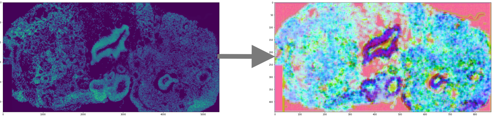

Email: name.secondname.phd@gmail.com
Blog: Brilliantly wrong
Github: arogozhnikov
Google Scholar: Alex Rogozhnikov
2022-now — head of data science at Parallel Biosystems
2019-2022 — principal ML scientist at Herophilus (prev. name System1 Biosciences)
2017-2018 — leading research engineer at Intelligence Lab, Samsung Research
2014-2017 — research scientist at Yandex (leading search engine in Russia), worked on joint research projects with
CERN
2015 — Ph.D. in computer science from Moscow State University
2014 — M.Sc. in machine learning from Yandex School of Data Analysis
2014 — M.Sc. in mathematical physics from Higher School of Economics (diploma with honors)
2012 — M.Sc. in computer science from Moscow State University (diploma with honors)
Previously a member of CERN experiments: LHCb, SHiP, and an associated member of the OPERA experiment at INFN.
I develop algorithmic (and typically ML-based) solutions for the most important and intriguing problems.
At Herophilus (biotech startup growing "brains-in-a-dish" called cerebral organoids)
built pipelines and automated analysis of TL imaging, single-cell sequencing, IF organoid slices, ICC images, video imaging of neural activity and gene expression profiles.
Reworked tooling of data analysis team, developed models/approaches for vision in company, introduced an efficient and reliable algorithm to learn genotypes during demultiplexing in single-cell sequencing.
At Intelligence Lab (Samsung Research) investigated various approaches to one-shot learning
for face recognition on mobile devices.
Led development of neural text-to-speech synthesis, developed a data-efficient soft alignment of speech and text.
Also worked on object detection, active learning, and model conversion for production
At Yandex/CERN developed ML approaches to different problems in high energy physics at the Large Hadron Collider. Developed machine learning-based approaches for particle identification, tracking, online data filtering, flavour tagging and particle shower detection.
My methods were primarily developed for the LHCb experiment, but later spread across other CERN experiments.
Previous research topics include optimal control, mathematical physics, and even solid state theory.
Deep technical background helps in design of efficient algorithms and approaches, while wide experience allows dealing with non-trivial aspects of algorithms' existence-in-the-wild. And critical thinking is crucial to build proper validation.
Author and maintainer of einops tensor manipulations for deep learning. Einops is used in leading AI labs including FAIR, Google AI, Microsoft Research and Deepmind. Einops supports all major frameworks, including pytorch, tensorflow, jax and mxnet.
Wrote "migrating to python 3 with pleasure" back in 2018, which turned out to be rather impactful. Those days 'whether to migrate' was still a debated question.
Authored and maintained multiple open-source packages:
Dozens of other smaller things, public and proprietary: research versioning, highly optimized number crunchers, ML competitions platform, and miniaturized deep learning models for cell phones.
I maintain some of my projects with multiple users for >5 years, which shaped my mind on architecture, methodology, and choice of tooling.
Full list at google scholar
Talks at conferences and workshops: ACAT 2016 (Chile), Heavy Flavour Data Mining Workshop 2016 (Zurich), International Workshop on Nuclear Emulsions 2016 (Naples), IML Machine Learning workshop 2017 (Geneva). NeurIPS 2021 (online), ICLR 2022 (online). Co-authors also presented results at CHEP 2015 (Okinawa, Japan), CHEP 2016 (San-Francisco, USA), ICML 2015 (Lille, France), ML prospects and applications 2015 (Berlin), ACAT 2017 (Seattle, USA), Connecting the dots 2018 (Seattle, USA), CSHL 2019 (NY, USA),
Main tools: python + scientific stack + pytorch + AWS. I'm deeply familiar with python world and data stack in particular.
Using HTML/CSS/JS stack from time to time, enjoying WebGL and shaders.
Used in different projects: C# and .NET platform, have experience with C++, PHP, SQL, fortran, and a bit of Java.
Used in education, but not in real projects: in MATLAB, R, assembler, CUDA.
I've authored several ML courses with quite different scope. Courses' materials are available online
Organized and co-organized around a dozen of in-class data challenges based on kaggle platform. Developed/implemented specific evaluation metrics for "Flavours of Physics" challenge at Kaggle run by Yandex & CERN.
To make algorithmic part of machine learning techniques more intuitive, I've made a number of demonstrations which can be found in my blog.
(click for details)
Developed a method to describe organoid morphology from brightfield imaging without manual labelling. Demonstrated its power by predicting gene expression levels from images as well as various visual phenotypes.
Decomposed variability to contributing factors to guide following decisions on minimizing variability. Method is so sensitive it notices minor changes in protocol.
Model was trained to describe tissue structure by providing a vector description for each segment, which allowed automated comparison and search for similar tissue.

Einops is a package and notation that reconsider tensor manipulations. Working on top of leading deep learning frameworks, einops makes code shorter, more readable and reliable.
Einops is used by dozens of AI labs in hundreds of open-source projects.
Leading development of speech synthesis technique that employs only neural networks. None to an adorable chatter in 2 months.
Building a system for face identification/verification based on deep learning. The system is optimized to run on mobile devices and to deal with few-shot learning scenario (i.e. very few training samples for each person).
InfiniteBoost is a modification of gradient boosting that converges when a number of trees in the ensemble tends to infinity. In this approach, it is also possible to introduce automated tuning of capacity (it is a parameter that is similar to learning rate in gradient boosting). Read more
LHCb is one of four major experiments at the LHC, and it is a bit different from other experiments — LHCb is single arm, and analyzes particles in quite limited angle. However, the advantage of this scheme compared to other experiments, is that LHCb provides more information to identify particles, which makes it more precise in studies of b-physics.
We prepared a major update of particle identification system with deep networks and GBDT. Important part was preparing models which are independent on momentum using an approach from "Boosting to uniformity" (see below). Read more
The OPERA is an experiment placed inside a mountain in Italy, it was created to confirm neutrino oscillations (Nobel prize 2015). In this project I've created a system that detects electromagnetic showers in the data collected by the OPERA. That is, among millions of base tracks it finds a small pattern of ~ hundred base tracks. Needle-in-a-hay problem with tough computational requirements. Read more
An important problem of many analyses in high energy physics is a discrepancy between simulated data and real data. An approach used previously to reduce this effect can only handle discrepancies in 1-2 variables.
An algorithm was proposed that directly solves reweighting problem in many dimensions and additionally addresses some issues important for LHCb analyses, such as handling negative weights (so-called sWeights). This tool is used in LHCb analyses. Read more
Guessing flavour of a neutral (non-charged) meson isn't easy, but required to estimate some of the standard model parameters. This information can be partially reconstructed by analyzing tracks left by other particles produced after collision.
We came up with a simple probabilistic model which combines information from all the other tracks — and it works better than previous approaches, where separate analysis was performed for each type of tagging particles and for each meson. Read more
Later I've tried to improve the system by including attention-like mechanism. This helps when amount of training data is limited. Read more
Various statistical dependencies may be easy to use to improve classification, but are undesirable to influence our decisions (simplified examples are gender and race when using ML in hiring). Simply removing these features from training may not be sufficient, since other features may still have this information (e.g. photo in CV helps easily guess the gender, in some languages gender of a writer can be inferred from the text).
We developed a method that is capable of suppressing dependency between classification result and one or more selected variables using specific loss (that is based on Cramer-von Mises criterion). Read more
The COMET is an experiment in high energy physics currently under construction in Japan targeted at finding charged LFV transitions. The goal was to prepare a fast system that efficiently selects candidate events for transitions.
Using machine learning coupled with a soft modification of Hough transform we were able to improve wire-level recognition quality: ROC AUC from 0.95 to 0.9993. Read more
Millions of collisions should be analyzed each second at the LHCb experiment, which is an enormous amount of data (that can't even be stored), so the experiment uses online triggers that decide which collisions to store and which can be deleted.
Our team developed new trigger system based on MatrixNet (Yandex proprietary GBDT modification). I was responsible for speeding up the model and managed to compress an already trained MatrixNet ensemble from 10'000 trees to 100 without significant drop in quality. Read more
I was in a group led by Vladimir Il'in (wiki) and investigated the problems of optimal boundary control of oscillations described by wave equation (exciting / damping of particular oscillations by actively interacting with a system at the boundary). Typical approaches investigate numerical algorithms to find an approximate solution, our group developed methods to solve the problem analytically, hence precisely and more efficiently.
I've introduced a special notation based on operator matrices to describe the problem and provided optimal solution of control problem for composite rods/strings of multiple parts (previous results covered only very specific case with two parts and additional strong requirements).
This research was selected as "best student's paper in mathematics" by Russian Academy of Sciences in 2012.
This is a research in solid state theory: both dense loop model and spanning web model are lattice models (and have corresponding partition functions), their nice duality made it possible to compute partition function and loops density of dense loop model. Read more (my part is computations for web models).